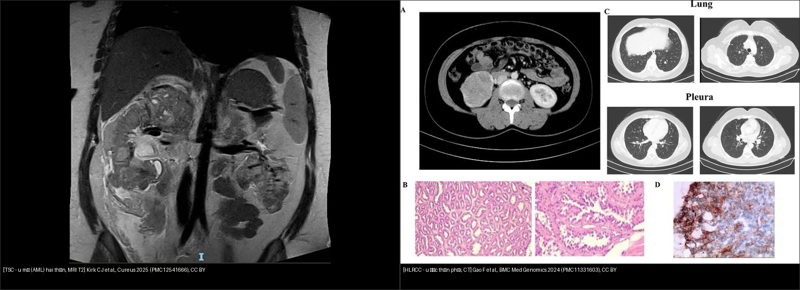
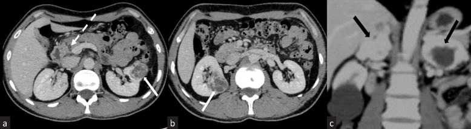
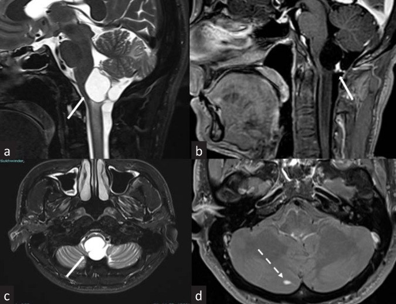
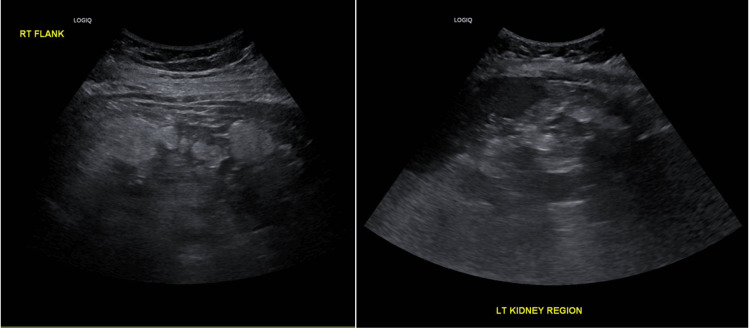
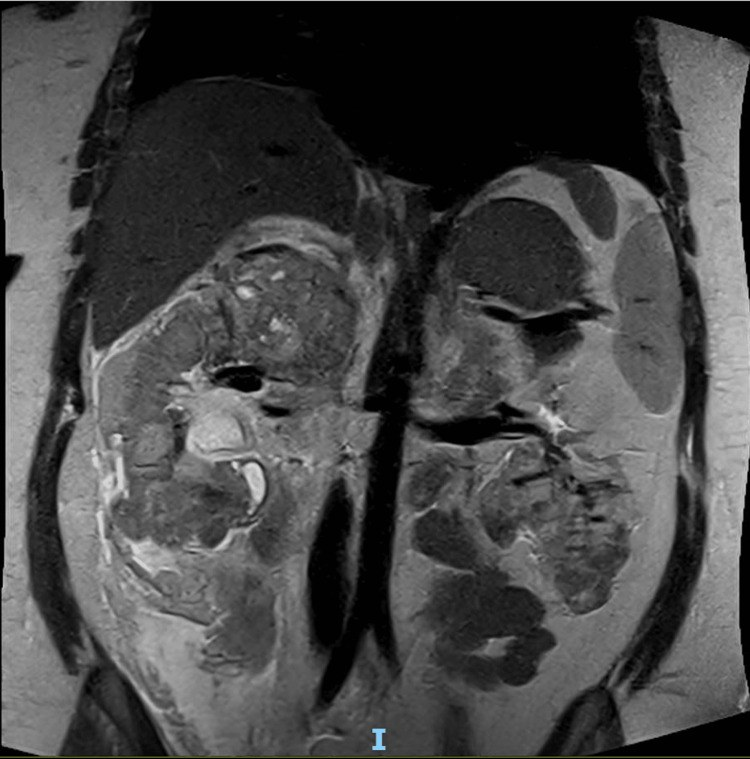
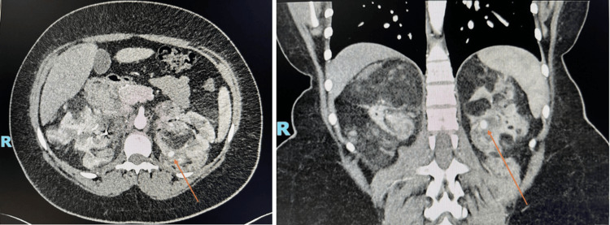
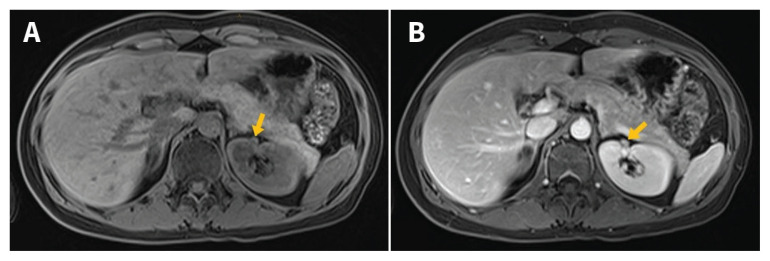
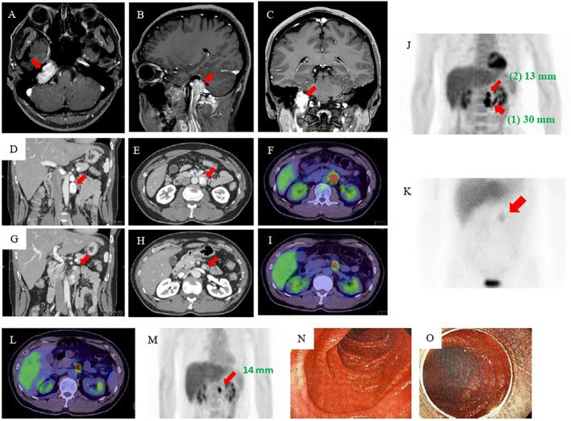

156 — Hội chứng di truyền u thận / Hereditary renal tumor syndromes (VHL · BHD · HLRCC · TSC · SDH)
Tags: pattern:u-than-dac pattern:u-than-hai-ben vung:than protocol:sang-loc-u-than-di-truyen incidentaloma:u-than-tinh-co
Mức chắc chắn (certainty): tổng hợp y văn (literature synthesis) — nhóm tự biên từ y văn mở (Indian J Nephrol 2025, Familial Cancer 2026, Diagnostics 2023, Cureus 2025, J Kidney Cancer VHL 2022, BMC Med Genomics 2024, CMAJ 2026, Front Endocrinol 2022, Virchows Arch 2026, Eur J Radiol Open 2022), số liệu lấy nguyên từ bài gốc.
Câu chốt: U thận hai bên + đa ổ ở người trẻ không bao giờ được gọi là "RCC ngẫu nhiên hai bên" — phải chủ động tìm hội chứng di truyền, vì nó đổi cả tầm soát cả gia đình, thời điểm mổ và thuốc toàn thân (mTOR/HIF-2α).
1. Tổng quan — vì sao gen hỏng lại đổi hình ảnh, và ngưỡng định lượng
Năm hội chứng dùng chung một cơ chế: đột biến dòng mầm (germline) ở gen ức chế u → mất chức năng ức chế → tăng sinh đa ổ, hai bên, ở người trẻ. Loại gen quyết định loại u (mỡ hay đặc, tế bào sáng hay nhú) và cơ quan ngoài thận. Hiểu cơ chế = đọc được tín hiệu.
- VHL (von Hippel-Lindau, gen VHL, 3p25): mất pVHL → HIF không bị phân giải → tăng VEGF/angiogenesis. Hệ quả hình ảnh: u rất giàu mạch → ngấm mạnh thì động mạch rồi rửa nhanh; ccRCC tế bào sáng giàu lipid/glycogen → T1 hơi cao, T2 sáng, có giảm tín hiệu chemical-shift (mỡ vi thể). VHL sinh cả nang (thận/tụy) và u mạch máu (hemangioblastoma).
- BHD (Birt-Hogg-Dubé, gen FLCN, 17p11.2): mất folliculin → loạn mTOR + rối loạn kết dính tế bào. Hệ quả: nang phổi đáy phổi hai bên + u thận typ oncocytoma / u tế bào kết hợp (hybrid oncocytic tumor) / chromophobe RCC (đa ổ, hai bên, tiến triển chậm).
- HLRCC (gen FH, 1q42.3): mất fumarate hydratase → ứ fumarate (oncometabolite) → ổn định HIF + đổi epigenome → RCC nhú typ 2 kiểu HLRCC (đặc tế bào ưa acid, nhân lớn, hạt nhân rõ có "quầng quanh nhân" — WHO 2016). Kèm u cơ trơn (leiomyoma) da & tử cung sớm, nhiều.
- TSC (xơ cứng củ, gen TSC1/TSC2): mất hamartin/tuberin → mTOR bật liên tục → u mạch cơ mỡ (angiomyolipoma — AML): mô học 3 thành phần (mỡ + cơ trơn + mạch loạn dạng). Mỡ đại thể → −10 đến −100 HU trên CT (không cản quang), T1 sáng tắt khi fat-sat; mạch loạn dạng → phình giả trong u → vỡ, chảy máu sau phúc mạc (Wunderlich).
- SDH (SDHA/B/C/D): mất phức hợp II ty thể → ứ succinate (oncometabolite) → SDH-deficient RCC (< 1% RCC, tế bào ưa acid xếp đặc/ổ) + paraganglioma/pheochromocytoma + GIST.
Ngưỡng định lượng bắt buộc (mục 1 & 4):
- Ngấm thật trên CT = tăng ≥ 20 HU so với không cản quang (dưới ngưỡng = nang/pseudolesion); giả ngấm (pseudoenhancement) hay gặp ở nốt < 1 cm.
- Mỡ đại thể trong u = −10 đến −100 HU (chốt AML); mỡ vi thể = giảm tín hiệu chemical-shift (in-phase/out-of-phase) mà không thấy mỡ đại thể.
- VHL: RCC xuất hiện ở tới 70% bệnh nhân trước tuổi 60; hemangioblastoma TKTW 60–80%; u mạch võng mạc là biểu hiện đầu tiên ở 43%, xác suất tích lũy 80% tới tuổi 80; nang/u thần kinh nội tiết tụy ~60% (pNET 8–17%). U < 3 cm → theo dõi chủ động (nguy cơ di căn thấp).
- BHD: nang phổi 70–85% (có thể chiếm tới 30% nhu mô), tràn khí màng phổi ~25% (một số nghiên cứu tới 61%; tuổi trung vị tràn khí đầu ~38 tuổi), ung thư thận 19–35%, u da 84%; tỉ lệ lưu hành ~1/200.000. Trên CT, nang BHD to nhất 4,1 ± 1,1 cm (vs 1,6 ± 0,9 cm ở người không BHD); cắt ngưỡng 2,1 cm → Se 99% / Sp 82%, AUC 0,955; đa dạng kích thước nang 100% vs 18,2%.
- HLRCC: nguy cơ RCC tích lũy cả đời 15%, tuổi chẩn đoán trung bình 41 tuổi (10–90); u cơ trơn da > 80%; 70% u cơ trơn tử cung được chẩn đoán trước 30 tuổi.
- TSC: biểu hiện thận tới 80%; nguy cơ chảy máu AML 25–50%; bệnh thận là nguyên nhân tử vong hàng đầu ở người lớn TSC; AML đơn độc ngẫu nhiên gặp ở tới 3% dân số chung.
- SDH: < 1% các RCC.
2. Mẫu hình + chẩn đoán phân biệt theo vị trí & loại mô (Gamut)
- Mẫu hình A — "u thận HAI BÊN/đa ổ ở người trẻ (< 40 tuổi)":** nghĩ ngay 5 hội chứng **VHL · BHD · HLRCC · TSC · SDH**. Kèm **> 1 cơ quan càng mạnh.
- Mẫu hình B — "u thận có MỠ": AML (TSC/ngẫu nhiên) là chính; hiếm gặp RCC chứa mỡ, liposarcoma, u mỡ xâm lấn xương. Mỡ đại thể (HU thấp rõ) khác mỡ vi thể (chỉ chemical-shift).
- Mẫu hình C — "nang phổi đáy phổi + u thận/da": BHD (nang mỏng thành, đa dạng kích thước, đáy phổi, hai bên) — khác LAM (bệnh mô kẽ lan tỏa + tràn khí, nữ, TSC) và PLCH (nốt + nang thùy trên, hút thuốc).
- Mẫu hình D — "AML hai thận + tổn thương TKTW/da": TSC (SEGA, củ vỏ não, u mạch cơ mỡ, LAM, u cơ tim, u mạch cơ mỡ da, mảng giảm sắc tố).
- Mẫu hình E — "u thận đặc + paraganglioma/pheochromocytoma/GIST": SDH.
- Gợi nhớ ngoài thận (chốt chẩn đoán):
- VHL: hemangioblastoma TKTW (tiểu não/hành tủy), u mạch võng mạc, pheo, u thần kinh nội tiết tụy, u túi nội dịch (ELST).
- BHD: nang phổi đáy + tràn khí màng phổi tự phát tái diễn + fibrofolliculoma (sẩn sáp mặt).
- HLRCC: u cơ trơn da (đau, sờ nổi) + u xơ tử cung rất sớm/nhiều.
- TSC: mảng giảm sắc tố "lá dương xỉ", u sợi mạch mặt (angiofibroma), SEGA, động kinh, LAM.
- SDH: PGL/pheo (SDHB → nguy cơ ác cao), GIST trẻ (Carney-Stratakis).
3. Bảng so sánh phân biệt (ma trận đối chiếu)
| Thực thể (entity) | Hình ảnh điển hình | Chốt vào (rule-in) | Chốt loại (rule-out) | Gợi ý xác nhận |
|---|---|---|---|---|
| VHL | ccRCC hai bên/đa ổ + nang thận & tụy, pheo (2 thượng thận), u mạch máu TKTW/võng mạc | U thận đặc đa ổ + nang tụy + pheo/u mạch máu ở người trẻ | U thận đơn độc không kèm tổn thương cơ quan khác → ít nghĩ VHL | Gene VHL; lịch MRI bụng + não tủy; belzutifan khi không mổ được |
| BHD | Nang phổi đáy phổi hai bên (mỏng thành, đa dạng kích thước) + u thận oncocytoma/hybrid/chromophobe | Nang phổi đáy + tràn khí tự phát tái diễn + > 1 nang > 2,1 cm + tiền sử gia đình | Nang phổi thùy trên + nốt (PLCH) hoặc LAM lan tỏa → loại BHD | Gene FLCN; CT ngực + MRI thận định kỳ |
| HLRCC | U thận đặc, nhú typ 2, một ổ (có thể < 1 cm), ngấm + thải; kèm u cơ trơn | U thận nhú typ 2 + u cơ trơn da/tử cung sớm, nhiều | U thận không kèm u cơ trơn/tiền sử gia đình → ít nghĩ HLRCC | Gene FH; IHC mất FH + 2SC dương; MRI thận hằng năm |
| TSC | AML hai thận, nhiều, to, có MỠ đại thể; nang thận; phình giả trong u | U thận có mỡ (−10 đến −100 HU) + SEGA/củ vỏ não/LAM/u cơ tim/u mặt | U thận đặc không mỡ hai bên → TSC ít khả năng; nghĩ VHL/SDH | Gene TSC1/TSC2; everolimus khi AML ≥ 3 cm/tăng nhanh; nút mạch khi chảy máu |
| SDH | SDH-deficient RCC đặc/ổ tế bào ưa acid + PGL/pheo (đôi khi GIST) | U thận + PGL/pheo (hoặc GIST) ở người trẻ | Không có PGL/pheo → ít nghĩ SDH | IHC mất SDHB; gene SDHA/B/C/D; tầm soát PGL/pheo toàn thân |

*Trái: TSC — hai thận méo mó vì nhiều u mỡ (AML) trên MRI T2. Phải: HLRCC — u đặc thận phải, kèm tổn thương phổi (di căn) trên CT. Chốt: có mỡ đại thể = AML (TSC); đặc không mỡ, một ổ = RCC (HLRCC/VHL/SDH). Nguồn: Kirk CJ et al., Cureus 2025 (PMC12541666) + Gao F et al., BMC Med Genomics 2024 (PMC11331603), CC BY. Ảnh ghép letterbox.*4. Protocol chụp + lịch tầm soát + sơ đồ ra quyết định
- Nguyên tắc chung: đây là tầm soát lặp lại nhiều lần, bắt đầu từ tuổi trẻ/thiếu niên → ưu tiên MRI (không tia X); hạn chế CT tích lũy liều. US là tuyến đầu ở trẻ nhỏ (thóp/ổ bụng). WB-MRI (whole-body MRI) đánh giá nhiều cơ quan trong một lần, không tia xạ — hợp bệnh nhân trẻ hơn PET/CT.
- Thận: MRI bụng có + không cản quang (T1 in/out-of-phase để tìm mỡ vi thể, T2, DWI/ADC, T1 fat-sat sau tiêm). CT đa thì khi cần đánh giá mạch/phình giả. Đo ngấm ≥ 20 HU để phân biệt nốt đặc với nang.
- TKTW (VHL): MRI não + tủy toàn bộ (hemangioblastoma có thể ở hành tủy/tủy).
- Ngực (BHD): HRCT ngực thì hít vào (và thở ra khi nghi tắc nghẽn) — mô tả vị trí đáy, kích thước > 2,1 cm, đa dạng kích thước.
- Thượng thận/PGL: MRI/CT + metanephrine huyết/tương (không chỉ hình ảnh).
- Bảng lịch tầm soát VHL (theo khuyến cáo quốc tế, Indian J Nephrol/Familial Cancer 2025–2026):
| Tổn thương | Khoảng tầm soát | Tuổi bắt đầu | Phương thức |
|---|---|---|---|
| U mạch võng mạc | Hằng năm | Càng sớm càng tốt | Soi đáy mắt |
| Hemangioblastoma TKTW | 2 năm/lần + khám thần kinh hằng năm | 15 (baseline 10) | MRI |
| Tổn thương thận | 2 năm/lần | 15 | MRI và/hoặc CT |
| Tổn thương tụy | 2 năm/lần | 15–65 (khi chưa có tổn thương) | MRI và/hoặc CT |
| Pheochromocytoma | Hằng năm | 5 | Metanephrine ± MRI/CT |
| U túi nội dịch (ELST) | 2 năm/lần | 15 | MRI + thính lực đồ |
- Khi cần đo "động học khối u" (tumor kinetics): tăng tần suất MRI 3–6 tháng/lần để tính tốc độ phát triển → cá nhân hóa lịch theo dõi (VHL: u < 3 cm theo dõi chủ động).
- HLRCC: MRI thận hằng năm (bắt đầu từ ~8–10 tuổi theo nhiều khuyến cáo; chưa đồng thuận hoàn toàn) vì u có thể nhỏ nhưng di căn sớm → ngưỡng mổ thấp hơn RCC thường.
- TSC: MRI bụng 1–3 năm/lần; AML ≥ 3 cm hoặc tăng nhanh → cân nhắc everolimus (mTOR); AML chảy máu/phình giả → nút mạch siêu chọn lọc.
- BHD: MRI/CT thận định kỳ (không cần cản quang thường quy) + CT ngực; giáo dục tránh hút thuốc, lặn, bay áp lực (nguy cơ tràn khí).
flowchart TD
A[U than HAI BEN / da o o nguoi tre] --> B{U than co MO dai the? -10 den -100 HU}
B -->|Co| C[AML - nghi TSC: tim SEGA, cu vo nao, LAM, u co tim, u mat]
B -->|Khong| D{U than DAC + co PGL/pheo hoac GIST?}
D -->|Co| E[SDH-deficient RCC - IHC SDHB mat]
D -->|Khong| F{Nang phoi DAY + tran khi tai dien?}
F -->|Co| G[BHD - FLCN; nang > 2,1 cm, da dang kich thuoc]
F -->|Khong| H{U co tron da/tu cung SOM nhieu?}
H -->|Co| I[HLRCC - FH; u nhu typ 2, di can som, mo som]
H -->|Khong| J{U mach mau TKTW/vong mac + pheo + nang tuy?}
J -->|Co| K[VHL - ccRCC da o; MRI abdom+nao-tuy, belzutifan]
J -->|Khong| L[RCC ngau nhien - van xem xet gene neu < 46 tuoi, da o, tien su gia dinh]
5. Biến thể bình thường và cạm bẫy
- AML nghèo mỡ (fat-poor AML) giả RCC: không thấy mỡ đại thể → dễ chẩn đoán nhầm RCC và mổ oan. Chốt: chemical-shift có mỡ vi thể + ngấm mạnh rồi bền/thải ít + bối cảnh TSC; sinh thiết khi còn nghi ngờ.
- Sai lầm "u thận hai bên = di căn": ở người trẻ, hai bên + đa ổ phải nghĩ hội chứng di truyền, không mặc định là di căn (u nguyên phát thứ hai).
- Pseudolesion/pseudoenhancement: nốt < 1 cm có thể "ngấm" giả do hiệu ứng thể tích → xác nhận bằng lát mỏng/MRI/CEUS.
- Nang đơn thuần làm lu mờ nốt đặc: trong nền nhiều nang (VHL/TSC), phải càn tìm phần đặc ngấm (satisfaction of search).
- T1 sáng KHÔNG = máu/u: mỡ (T1 sáng tắt khi fat-sat) khác máu/nhầy (T1 sáng không tắt). Dấu chốt mỡ = mất tín hiệu fat-sat + HU thấp.
- Pheo "tình cờ" bỏ sót: mọi u thượng thận > 10 HU ở bệnh nhân có u thận hai bên cần metanephrine trước khi sinh thiết/mổ (nguy cơ cơn tăng huyết áp).
- BHD vs LAM vs PLCH (nang phổi): BHD = đáy phổi, mỏng thành, đa dạng kích thước, > 2,1 cm, kèm u thận/da; LAM = lan tỏa, nữ, tràn khí, TSC; PLCH = thùy trên, nốt + nang, hút thuốc.
- Mỹ từ "theo dõi" ở HLRCC: khác RCC thường, u HLRCC nhỏ vẫn di căn sớm → không áp ngưỡng 3 cm của ccRCC cho HLRCC.
6. Tự lượng giá — Blind Quiz
Ca 1 — Nam 34 tuổi, đau bụng tiến triển + vã mồ hôi > 1 năm. CT bụng có cản quang (a, b axial; c coronal).

- Gợi ý lâm sàng: đau bụng, vã mồ hôi, huyết áp dao động.
- Câu hỏi: mô tả hai thận và tuyến thượng thận? Có gì ở tụy? Ba chẩn đoán phân biệt? Hội chứng nào gom tất cả lại?
Bấm để hiện đáp án (findings + chẩn đoán)
- Findings: hai thận có khối đặc–nang ngấm không đồng nhất ở hai bên (RCC) — mũi tên trắng đặc; tổn thượng thận hai bên ngấm mạnh (pheochromocytoma) — mũi tên đen; nang nhỏ ở đầu tụy (mũi tên đứt nét).
- Chẩn đoán: bệnh von Hippel-Lindau (VHL) — RCC hai bên + pheo hai bên + nang tụy. Cần MRI não–tủy tìm hemangioblastoma + soi đáy mắt.
- Chốt: u thận đa ổ hai bên ở người trẻ + pheo + nang tụy = VHL; u thận < 3 cm → theo dõi chủ động.
- Nguồn: Prabhakar N et al., Indian J Nephrol 2025, Fig. 1, PMC12392227, CC BY-NC-SA (giữ nguyên bản).
Ca 2 — Cùng bệnh nhân VHL, MRI não–cổ (a–c T2/sau tiêm, d sau tiêm).

- Câu hỏi: mô tả tổn thương ở hành tủy và tiểu não? Vì sao bệnh nhân VHL hay có loại tổn thương này?
Bấm để hiện đáp án (findings + chẩn đoán)
- Findings: nang T2 sáng + nốt thành ngấm mạnh ở mặt lưng hành tủy (a–c) và nốt ngấm nhỏ ở bán cầu tiểu não phải (d) = hemangioblastoma.
- Chẩn đoán: hemangioblastoma TKTW — gặp ở 60–80% bệnh nhân VHL; do mất pVHL → tăng HIF/VEGF → u rất giàu mạch. Dấu hiệu "nang + nốt thành ngấm" là chìa khóa.
- Nguồn: Prabhakar N et al., Indian J Nephrol 2025, Fig. 2, PMC12392227, CC BY-NC-SA (giữ nguyên bản).
Ca 3 — Nữ 62 tuổi, tràn khí màng phổi tự phát; CT ngực (A: bệnh nhân BHD; B: chứng không BHD; C: bệnh phẩm).

- Câu hỏi: nang phân bố ở đâu? Yếu tố nào trên CT gợi ý cần xét nghiệm gen FLCN?
Bấm để hiện đáp án (findings + chẩn đoán)
- Findings: nang phổi hai bên, ưu thế vùng ĐÁY, mỏng thành, kích thước rất đa dạng (A) — khác nang nhỏ rải rác ở nhóm không BHD (B). C: bệnh phẩm nang.
- Chẩn đoán: hội chứng Birt-Hogg-Dubé (BHD). Chốt: nang > 2,1 cm (Se 99%/Sp 82%, AUC 0,955) + đa dạng kích thước (100% vs 18,2%) + vị trí đáy → xét nghiệm gen FLCN, và tầm soát u thận (nguy cơ 19–35%).
- Nguồn: Choi YJ et al., Diagnostics 2023, Fig. 1, PMC9858281, CC BY.
Ca 4 — Nữ 22 tuổi, đau bụng phải; siêu âm (trái) và MRI T2 coronal (phải, cùng ca).


- Câu hỏi: mô tả bất thường hai thận? Tín hiệu/đậm độ gợi ý thành phần gì trong u? Hội chứng nào?
Bấm để hiện đáp án (findings + chẩn đoán)
- Findings: siêu âm: ổ tăng hồi âm (mỡ) ở cả hai vùng thận; MRI T2 coronal: hai thận méo mó vì vô số u chứa mỡ = angiomyolipoma hai bên, nhiều.
- Chẩn đoán: xơ cứng củ (TSC) — AML hai thận, nhiều, to (biểu hiện thận gặp tới 80%; AML TSC lớn hơn, nhiều hơn, hai bên so AML ngẫu nhiên). Chốt: mỡ đại thể −10 đến −100 HU / tăng hồi âm / T1 sáng tắt khi fat-sat.
- Nguồn: Kirk CJ et al., Cureus 2025, Fig. 3–4, PMC12541666, CC BY.
Ca 5 — Cùng bệnh nhân TSC, CT đa thì bụng (thì động mạch) sau đợt chảy máu sau phúc mạc.

- Câu hỏi: bất thường tròn tăng đậm độ trong/ven thận là gì? Vì sao nguy hiểm và xử trí?
Bấm để hiện đáp án (findings + chẩn đoán)
- Findings: hai thận vô số AML + phình giả (pseudoaneurysm) dạng tròn tăng đậm độ thì động mạch trong u (mũi tên cam).
- Chẩn đoán: phình giả trong AML là nguồn chảy máu — nguy cơ chảy máu AML ở TSC 25–50%; xử trí nút mạch siêu chọn lọc (ca này có phình giả 9 mm ở thận đối diện được nút mạch dự phòng), kèm cân nhắc everolimus.
- Nguồn: Kirk CJ et al., Cureus 2025, Fig. 6–9, PMC12541666, CC BY.
Ca 6 — Ghép đối chiếu: bên nào là u MỠ, bên nào là u ĐẶC?
Bấm để hiện đáp án (findings + chẩn đoán)
- Trái — TSC: hai thận biến dạng vì nhiều u mỡ (AML) → có mỡ đại thể = AML. Phải — HLRCC: u đặc một ổ thận phải (kèm tổn thương phổi di căn) → RCC.
- Chốt: mỡ đại thể → AML (TSC); đặc không mỡ → RCC; nhưng RCC đặc hai bên ở người trẻ vẫn phải truy hội chứng (VHL/SDH/HLRCC/BHD). Nguồn: Kirk CJ et al., Cureus 2025 (PMC12541666) + Gao F et al., BMC Med Genomics 2024 (PMC11331603), CC BY.
Ca 7 — Nữ 30 tuổi, sẩn đỏ nâu ở lưng (u cơ trơn da); MRI bụng T1 trước (A) và sau tiêm thì thận (B).

- Gợi ý: sẩn đau ở lưng + nhiều u xơ tử cung từ trẻ.
- Câu hỏi: mô tả tổn thương thận? Đây là loại u gì và vì sao phải can thiệp sớm dù rất nhỏ?
Bấm để hiện đáp án (findings + chẩn đoán)
- Findings: nốt 8 mm ngấm thuốc ở thận trái (mũi tên vàng) trên MRI sau tiêm (B), không thấy trên T1 trước tiêm (A).
- Chẩn đoán: RCC liên quan HLRCC (FH-deficient) — loại nhú typ 2, tiến triển hung hãn, di căn sớm. Chốt ngoài thận: u cơ trơn da + u xơ tử cung rất sớm/nhiều (70% trước 30 tuổi); nguy cơ RCC tích lũy 15%.
- Chốt xử trí: u HLRCC nhỏ vẫn có thể di căn → không áp ngưỡng "3 cm theo dõi" của ccRCC; MRI thận hằng năm, cân nhắc mổ/cắt bỏ sớm.
- Nguồn: Udupa M et al., CMAJ 2026, Fig. 2, PMC12826678, CC BY-NC-ND (giữ nguyên bản).
Ca 8 — Bệnh nhân trẻ, nhiều khối: (A–C) MRI đầu, (D–F) CT bụng, (G–K) PET/MIBG. Không có tổn thương thận rõ.

- Câu hỏi: các khối ngấm mạnh ở đâu? Nếu bệnh nhân kèm một u thận đặc ở người trẻ, hội chứng nào và gene nào?
Bấm để hiện đáp án (findings + chẩn đoán)
- Findings: paraganglioma đa ổ — khối ngấm mạnh ở đầu (chỗ lỗ tĩnh mạch), sau phúc mạc (30 mm, 13 mm) và tá tràng (14 mm), bắt xạ trên PET/MIBG.
- Chẩn đoán: hội chứng paraganglioma-pheochromocytoma liên quan SDH (SDHx); nếu kèm RCC đặc tế bào ưa acid ở người trẻ → SDH-deficient RCC (IHC mất SDHB, < 1% các RCC).
- Chốt: u thận + PGL/pheo (hoặc GIST) ở người trẻ = nghĩ SDH — tầm soát toàn thân bằng MIBG/PET và gen SDHA/B/C/D.
- Nguồn: Kawanabe S et al., Front Endocrinol 2022, Fig. 1, PMC9871575, CC BY.
Bài liên quan chéo
- 100 – Tổng quan hệ Bụng (bảng DDx bắt buộc)
- 150 – Nang thận & Bosniak (nang phức tạp, ngấm thật)
- 151 – U thận đặc: RCC vs oncocytoma vs AML (phân loại RCC, ccLS, mỡ)
- 153 – Thận nang mắc phải trên lọc máu & ACD-RCC (u thận hai bên ở nhóm khác)
- 155 – Thượng thận tình cờ (pheo/adenoma — không sinh thiết trước khi loại pheo)
Ảnh
- Tên file:
156_slug_Modality_SourceID.jpg. Nguồn + giấy phép từng ảnh trongimages/CREDITS.md. - Ảnh CC BY-NC-SA (PMC12392227) và CC BY-NC-ND (PMC12826678) giữ nguyên bản, không crop/ghép.
- Ảnh ghép (
composite_156_*) chỉ dùng ảnh CC BY (letterbox nền đen + dải attribution). - AuntMinnie / Radiopaedia: chỉ dẫn link, tải từng case khi giấy phép cho phép.
Không dùng để chẩn đoán độc lập khi chưa có người hướng dẫn.